← 返回阅读库 · 原论文目录
论文讲解阅读文档 · 机器人学 · v131
GENIMA Generative Image as Action Models[2407.07875]
视频时长 00:06:19；讲解文字 2,568 字符；提取讲解画面 61 张。按视频原顺序阅读，每段文字保留时间戳。
文字来自整段视频的自动语音转写，按自然停顿分段，并与 PPT / 论文页面 / 演示画面对齐。未将讲解压缩为摘要；术语、数字和口述公式请结合画面及原论文核对。 阅读稿已校正规范部分明确术语误识别；原始逐字稿和每处修改记录另行保留。
讲解画面为源视频截图（640×360），不是可编辑 PPT 文件。全片按每秒 2 帧扫描内容变化，逐步展开页保留；连续动画保留代表画面。清晰度受源视频限制。
下载完整资料包 · 含离线 HTML、PDF、Word、全部 PPT 画面和字幕。
原论文与材料
Generative Image as Action Models · 下载完整 PDF（27 页）
按时间阅读
00:00:00–00:00:04 · 画面 001
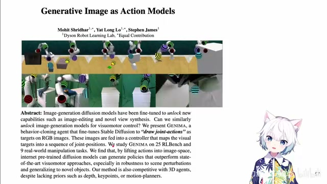
00:00:00–00:00:04 · 画面 001大家好啊，今天我们来快速说一篇论文，generative image as action models。这篇论文呢，是一个脑洞挺大的文章，就是呢，他使用一个 ControlNet，在已经有的这种 image observation 这种关于 robots 这种 observation 上添加像这样的，你看到这样的一些啊关键点也好，叫他这个路径点也好。
00:00:04–00:00:08 · 画面 002
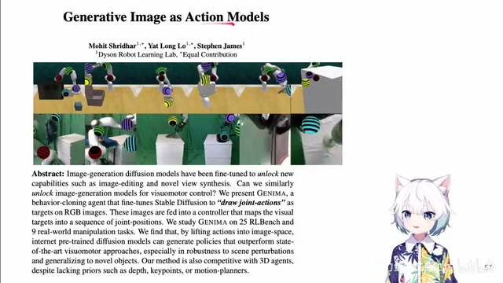
00:00:04–00:00:08 · 画面 00200:00:08–00:00:12 · 画面 003
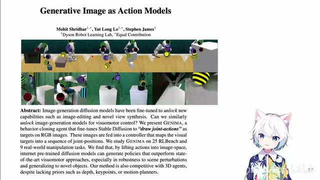
00:00:08–00:00:12 · 画面 00300:00:12–00:00:16 · 画面 004
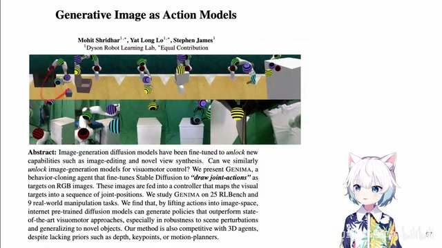
00:00:12–00:00:16 · 画面 00400:00:16–00:00:20 · 画面 005
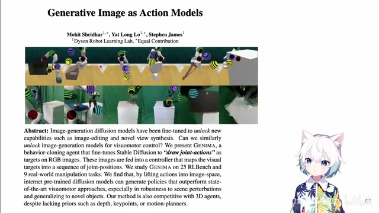
00:00:16–00:00:20 · 画面 00500:00:20–00:00:24 · 画面 006
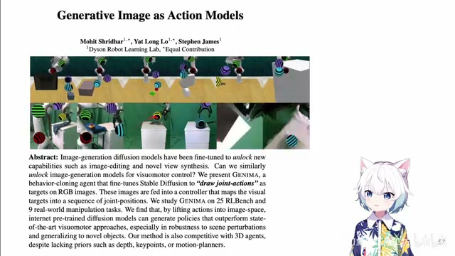
00:00:20–00:00:24 · 画面 00600:00:24–00:00:28 · 画面 007
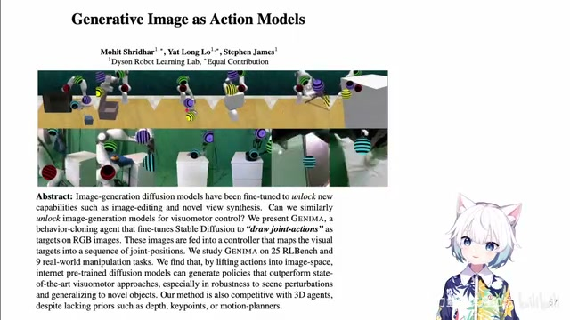
00:00:24–00:00:28 · 画面 007然后就通过带这种关键点的这种图像去引导我们的 Visual Motor Policy，根据这样的图像产生 Action，这是一个很奇葩的这么一个工作，要说下面我们继续来看。
00:00:28–00:00:32 · 画面 008
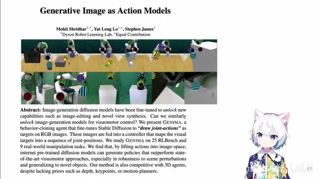
00:00:28–00:00:32 · 画面 00800:00:32–00:00:36 · 画面 009
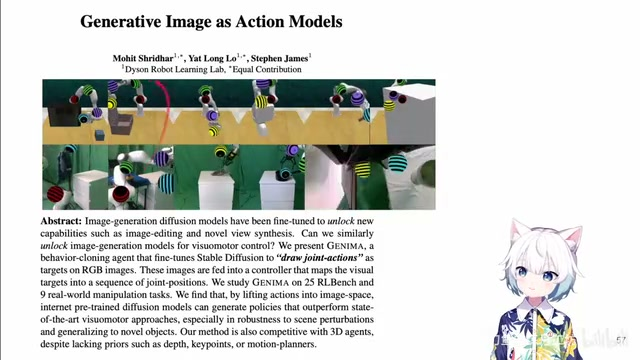
00:00:32–00:00:36 · 画面 00900:00:36–00:00:39 · 画面 010
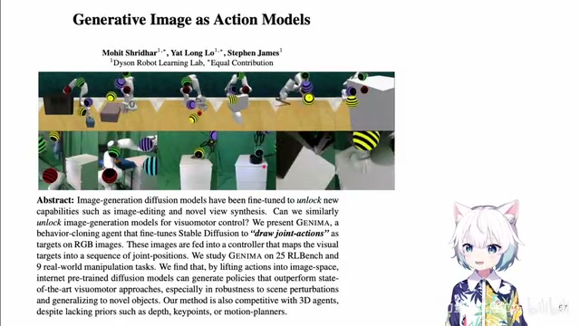
00:00:36–00:00:39 · 画面 01000:00:39–00:00:50 · 画面 011
00:00:39–00:00:50 · 画面 011就像我们之前说到的，这篇文章的核心的思想就是，我在推理的时候，第一阶段我用一个 stable diffusion turbo，其实它是加了 control net 来生成像这样的图像，这样的图像就是在已经有了原始的 observation 上增加一些这样的关节点，这些点代表着每个关节的位置，然后拿着这样的图像送到我们的 controller 里面变成 action 来去执行这个动作，下面我们具体来看。
00:00:50–00:00:51 · 画面 012
00:00:50–00:00:51 · 画面 01200:00:51–00:01:01 · 画面 013
00:00:51–00:01:01 · 画面 01300:01:01–00:01:02 · 画面 014
00:01:01–00:01:02 · 画面 01400:01:02–00:01:08 · 画面 015
00:01:02–00:01:08 · 画面 01500:01:08–00:01:28 · 画面 016
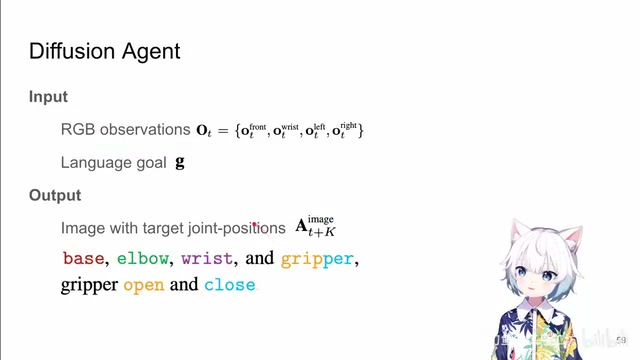
00:01:08–00:01:28 · 画面 016首先就是这个 diffusion 这里，作者叫它 diffusion agent，因为你想要知道这些关节点挂在哪里，其实它就需要做一定的决策，所以它也可以算是一种 agent 一部分。那在这种具体的配置下，它的这个输入包括我们原始的 observation，这里看到它可能是来自多个相机的，这里有四个相机，然后一个以 language 形式的这样一个目标，比如说这里打开盒子就是这样一句话。
00:01:28–00:01:29 · 画面 017
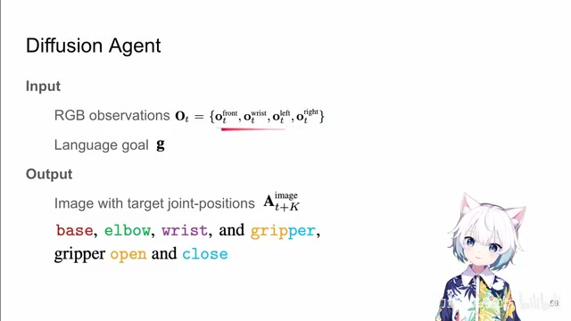
00:01:28–00:01:29 · 画面 01700:01:29–00:01:32 · 画面 018
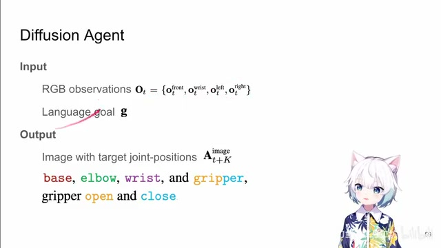
00:01:29–00:01:32 · 画面 01800:01:32–00:01:35 · 画面 019
00:01:32–00:01:35 · 画面 01900:01:35–00:01:42 · 画面 020
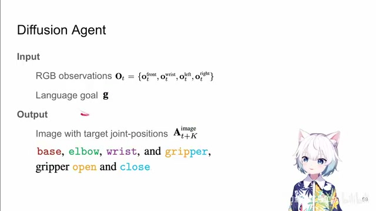
00:01:35–00:01:42 · 画面 020然后呢我们期望的输出呢就是还是原来的这张图像只不过这张图像呢带有了这些关节的位置这些位置呢是在 K 个 time step 之后的我们期望这个关节的位置那具体呢你看这里每一个关节它们呢都用不同的颜色给它画出来了然后至于这个 gripper 用这个橙色和蓝色两种颜色来区分它打开和关闭的这两个状态
00:01:42–00:01:43 · 画面 021
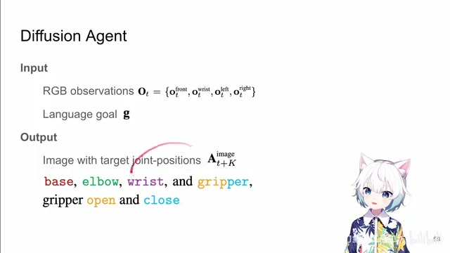
00:01:42–00:01:43 · 画面 02100:01:43–00:01:53 · 画面 022
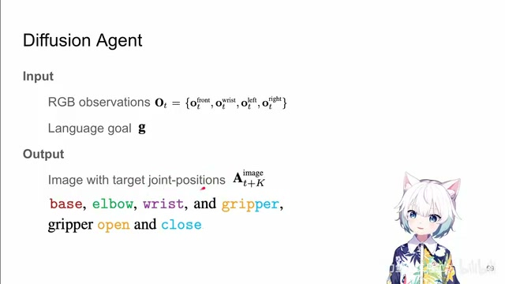
00:01:43–00:01:53 · 画面 02200:01:53–00:01:57 · 画面 023
00:01:53–00:01:57 · 画面 02300:01:57–00:02:01 · 画面 024
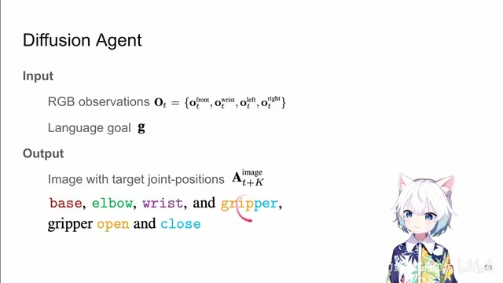
00:01:57–00:02:01 · 画面 02400:02:01–00:02:05 · 画面 025
00:02:01–00:02:05 · 画面 025这样子呢，就是通过图像的形式把我们的一个 policy 先是做了一个可视化出来，然后呢，拿到这样的那么为了具体实现这样一个模型呢，作者用了一个 pre-train 好的一个 stable diffusion 然后呢，加上 control net，这样子呢，图像的输入就可以从 control net 送进了。
00:02:05–00:02:11 · 画面 026
00:02:05–00:02:11 · 画面 02600:02:11–00:02:17 · 画面 027
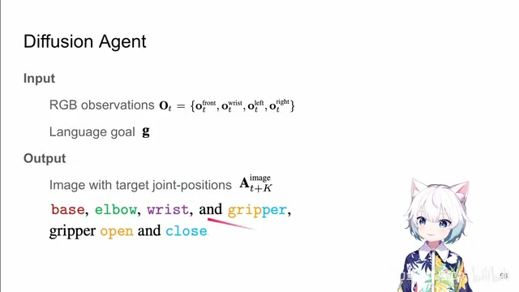
00:02:11–00:02:17 · 画面 02700:02:17–00:02:19 · 画面 028
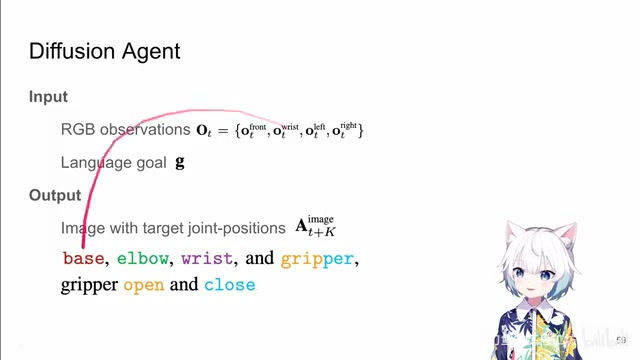
00:02:17–00:02:19 · 画面 02800:02:19–00:02:54 · 画面 029
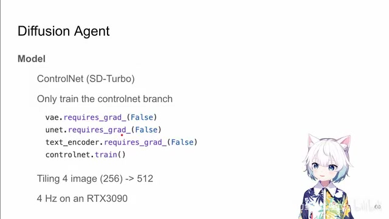
00:02:19–00:02:54 · 画面 029那文本的输入呢，一个 Stable Diffusion 嘛，你就过他的这个文字的 encoder，通过这个 crossattention 加到这个 unet 里面，完事你就可以达到这样的数据集训练了对吧，你只要手动的在这个数据集里面根据这个关节的位置把这些关节点创建出来，然后你就有自己的数据集了，你就用一个标准的 behavior cloning 数据集去训练就好了。那根据他的代码呢，他是只训练了 control net 的部分，其他的这些个 VAE unet text encoder 这些都都不动。
00:02:54–00:02:55 · 画面 030
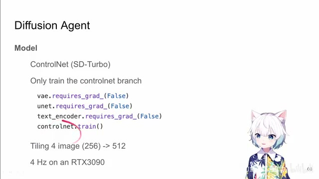
00:02:54–00:02:55 · 画面 03000:02:55–00:03:00 · 画面 031
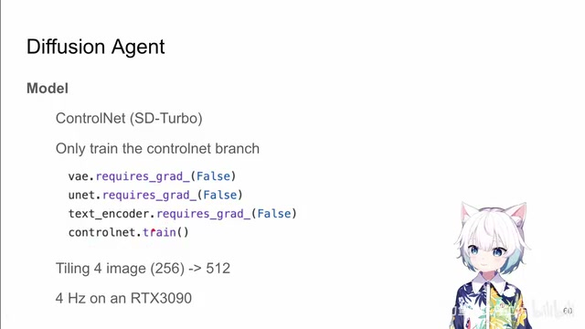
00:02:55–00:03:00 · 画面 031然后训练好了之后，这样子呢，就能够使得我们的这个模型在把这样的图经过你的一串绘制之后达到这样的图，这是一个很直接的一个做法。那当然它为了加速对吧，不是用了标准的 Diffusion 而是用了这个 SD Turbo，这样子呢，经过几步 UNet 的推理呢，就可以达到比较满意的结果，同时呢，我们之前说过这个图像它可能来自很多个相机。
00:03:00–00:03:01 · 画面 032
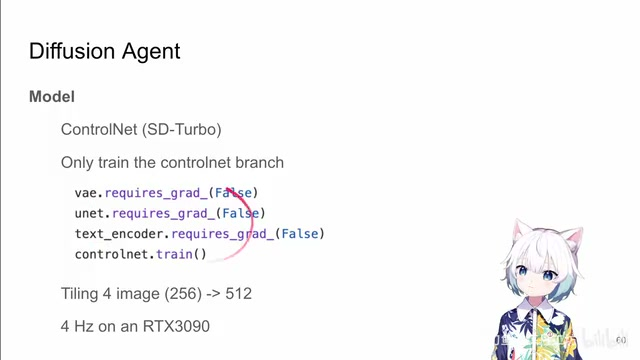
00:03:00–00:03:01 · 画面 03200:03:01–00:03:04 · 画面 033
00:03:01–00:03:04 · 画面 03300:03:04–00:03:11 · 画面 034
00:03:04–00:03:11 · 画面 03400:03:11–00:03:14 · 画面 035
00:03:11–00:03:14 · 画面 03500:03:14–00:03:22 · 画面 036
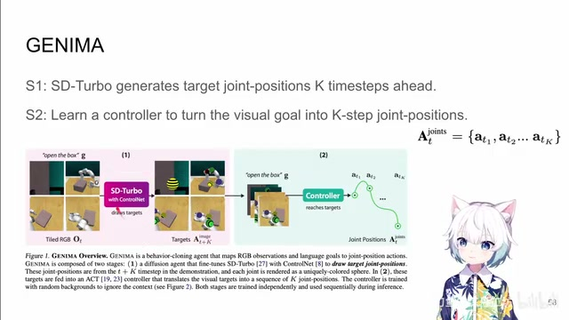
00:03:14–00:03:22 · 画面 03600:03:22–00:03:31 · 画面 037
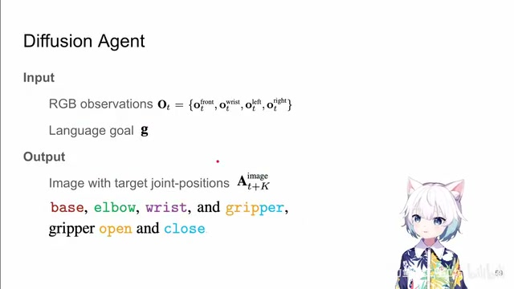
00:03:22–00:03:31 · 画面 037那我们这个时候并不是每一个相机每个相机单独的去做了，而是呢，直接把这四个图像拼成一个二乘二的这么一个网格，四个 256 的图像就变成一个 512 的图像，那作者发现呢，这样做呢，可以让他绘制出的关节点四个相机都同步，不然你四个相机他们的关节点画出来各执一词除了偏长这就不太好办。
00:03:31–00:03:55 · 画面 038
00:03:31–00:03:55 · 画面 038最终作者还说，用 SD-Turbo 加持下，RTX3090 上能跑 4 赫兹，这个是 Diffusion Agent 的部分，相当于用这个 Control Net 加成了这样一个 Stable Diffusion，让它能够做一个 Planning 的效果，它的表达通过图像中的这些关节的底来表达出来，这是第一个部分，至于第二个部分的 Controller 就用一个标准的 Visual Motor 一个视觉输入的这样一个 Policy 做了就好了。
00:03:55–00:03:56 · 画面 039
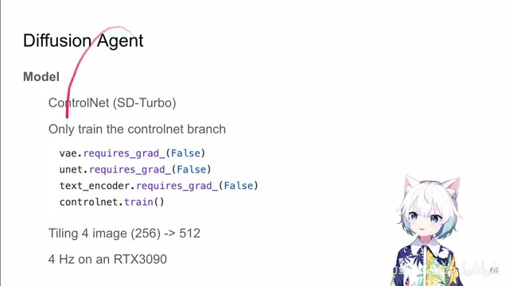
00:03:55–00:03:56 · 画面 03900:03:56–00:04:08 · 画面 040
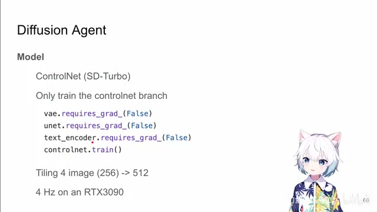
00:03:56–00:04:08 · 画面 04000:04:08–00:04:09 · 画面 041
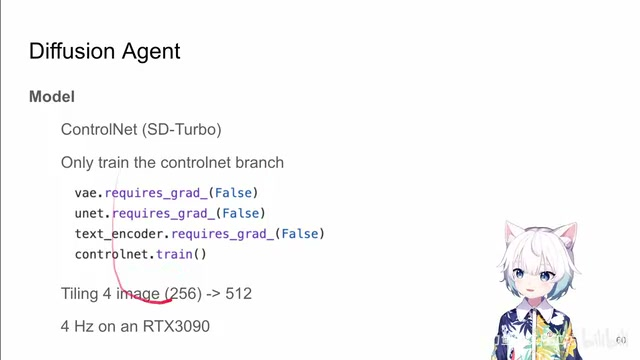
00:04:08–00:04:09 · 画面 04100:04:09–00:04:11 · 画面 042
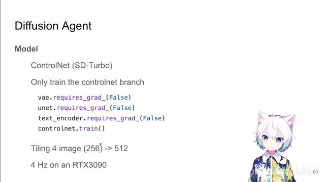
00:04:09–00:04:11 · 画面 04200:04:11–00:04:35 · 画面 043
00:04:11–00:04:35 · 画面 043理论上你用任何都行对吧？这里作者用了是一个 act 啊 ，the robot agent 这篇文章，你的当前的图像的观察，各种你卖的什么都对吧，都塞进 Transformer 里面，然后呢生成一串 action 序列。只不过他这个是由 encoder decoder 的结构 ，decision transformer 就是单纯的一个 encoder 这个
00:04:35–00:04:36 · 画面 044
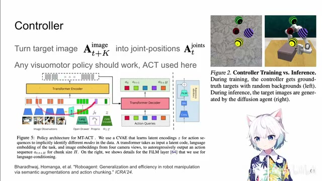
00:04:35–00:04:36 · 画面 04400:04:36–00:04:48 · 画面 045
00:04:36–00:04:48 · 画面 045条件和 action 交替进行了，反正这些构型你就随便发挥了。那当然你的 language 的 embedding 对我们的 image observation 开始有影响，也是做了经典的 FiLM。这个就是他的 policy。只不过注意呢，这时候他的 policy 的训练的数据并不是说直接拿我之前这个 diffusion 生成的这个数据做做训练，他呢实际上是只保留了
00:04:48–00:04:49 · 画面 046
00:04:48–00:04:49 · 画面 04600:04:49–00:05:10 · 画面 047
00:04:49–00:05:10 · 画面 047这四个关节点的位置，然后呢背景替换成随机的背景啊。这样替换成随机的背景，你其实就是强迫了你的这个 policy 只去关注这四个关键点的位置，然后呢就不太在意这些背景的这些波动。那么以上呢就是本文的技术路线，非常直接就是用 diffuser 做一个 planning，然后呢学一个 controller，把这个视觉上的 planning 变成 action。下面我们来看作者汇报的一些结果
00:05:10–00:05:11 · 画面 048
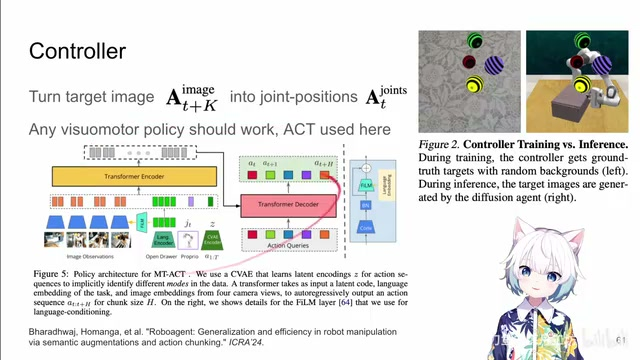
00:05:10–00:05:11 · 画面 04800:05:11–00:05:17 · 画面 049
00:05:11–00:05:17 · 画面 04900:05:17–00:05:23 · 画面 050
00:05:17–00:05:23 · 画面 05000:05:23–00:05:24 · 画面 051
00:05:23–00:05:24 · 画面 05100:05:24–00:05:28 · 画面 052
00:05:24–00:05:28 · 画面 05200:05:28–00:05:35 · 画面 053
00:05:28–00:05:35 · 画面 053在 rlbench 上选了 25 个任务同一个模型在很多任务上训练分别测试可以看到对比其他的方法它的性能在这里还有详细的 evolution 感兴趣的朋友非常推荐你到原文查看那么当然今天我们快速水这篇文章除了因为他脑洞大还有一点我比较欣赏他在附录里面把这些不 work 的东西给我们列出来
00:05:35–00:05:36 · 画面 054
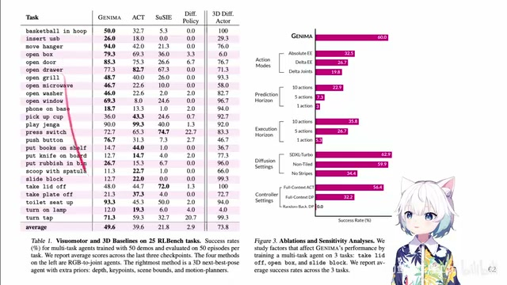
00:05:35–00:05:36 · 画面 05400:05:36–00:05:40 · 画面 055
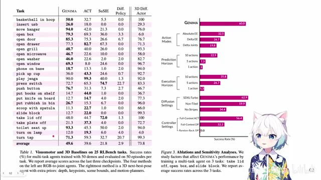
00:05:36–00:05:40 · 画面 05500:05:40–00:05:41 · 画面 056
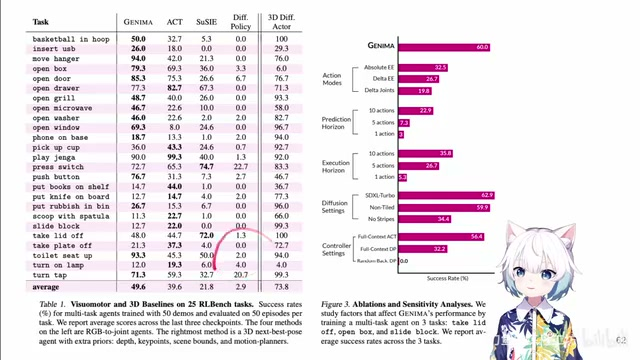
00:05:40–00:05:41 · 画面 05600:05:41–00:05:49 · 画面 057
00:05:41–00:05:49 · 画面 05700:05:49–00:05:53 · 画面 058
00:05:49–00:05:53 · 画面 05800:05:53–00:05:55 · 画面 059
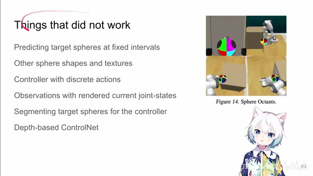
00:05:53–00:05:55 · 画面 05900:05:55–00:06:18 · 画面 060
00:05:55–00:06:18 · 画面 060比如说像这样子的做标记是不 work 的，我们需要把每个关节都标记出来，这样做是效果是最好的等等。包括整个文章的各个记录都很详细，然后也有代码，所以还是非常推荐你到原文查看。好的，那么以上就是我对这个文章的一个非常快速的整理，那么感谢您的收看，请多多指点
00:06:18–00:06:19 · 画面 061
00:06:18–00:06:19 · 画面 061转写与来源说明 · 0 个自动复核提示
保留 15 个原始语音片段，0 个片段触发自动复核提示。提示仅用于定位可能的术语、重复或识别问题，不等于已确认错误。
讲解画面为源视频截图（640×360），不是可编辑 PPT 文件。全片按每秒 2 帧扫描内容变化，逐步展开页保留；连续动画保留代表画面。清晰度受源视频限制。
原视频：paper/合集_2026-10-16_机器人学/[论文速览]GENIMA Generative Image as Action Models[2407.07875].mp4
SHA-256：7f929308364af2d1409021f81388e5495d10912a1c3e8576e9832df7101ba850
全文按视频语音与画面制作。原论文可从上方链接下载；完整资料包保留全文、原始逐字稿、字幕和校对记录。